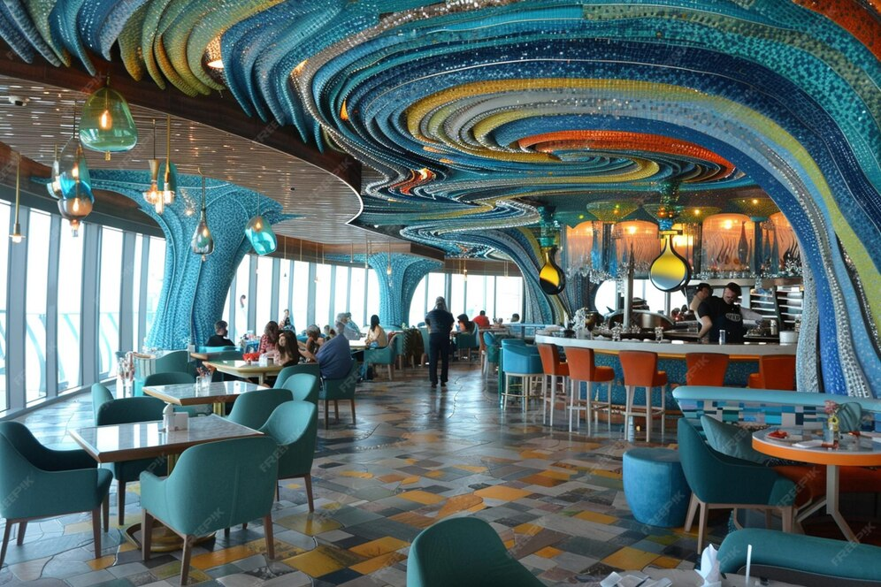

Welcome to Herbi's
Discover delicious plant-based dishes inspired by Mediterranean flavours and modern vegan cooking.

Welcome to Herbi's, a vegan restaurant in Bristol where fresh ingredients, bold flavours, and a relaxed atmosphere come together. Our menu is inspired by Mediterranean cooking and modern plant-based cuisine, offering colourful dishes that are both satisfying and beautifully presented.
Located in the heart of Bristol, Herbi's is the perfect place for casual lunches, evening dinners, and special occasions with friends or family. From vibrant salads and comforting mains to creative small plates and refreshing drinks, every dish is prepared with care to celebrate the variety and richness of vegan food.
We believe dining should feel welcoming, memorable, and full of character. With a stylish interior, friendly service, and a menu designed for both dedicated vegans and curious food lovers, Herbi's offers a unique plant-based experience in one of Bristol’s most exciting food scenes.
Our dishes are crafted to celebrate the richness of plant-based cuisine. Each plate combines fresh seasonal ingredients with bold Mediterranean flavours, creating meals that are both nourishing and beautifully presented.
At Herbi's, we believe vegan food should be exciting, colourful, and satisfying for everyone. From hearty mains to light seasonal creations, every dish is prepared with care by our kitchen team to highlight natural flavours and quality ingredients.
Whether you are a long-time vegan or simply curious about plant-based cooking, our menu invites you to explore new tastes and enjoy a relaxed dining experience in the heart of Bristol.